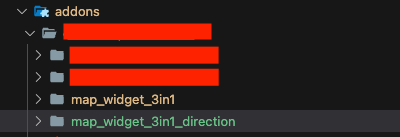
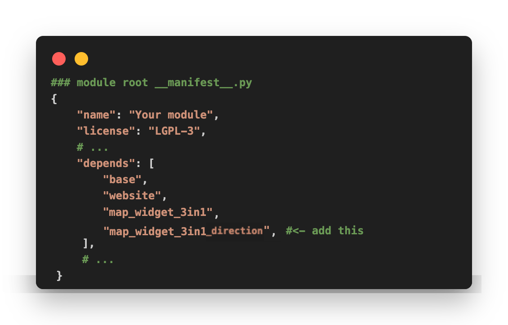
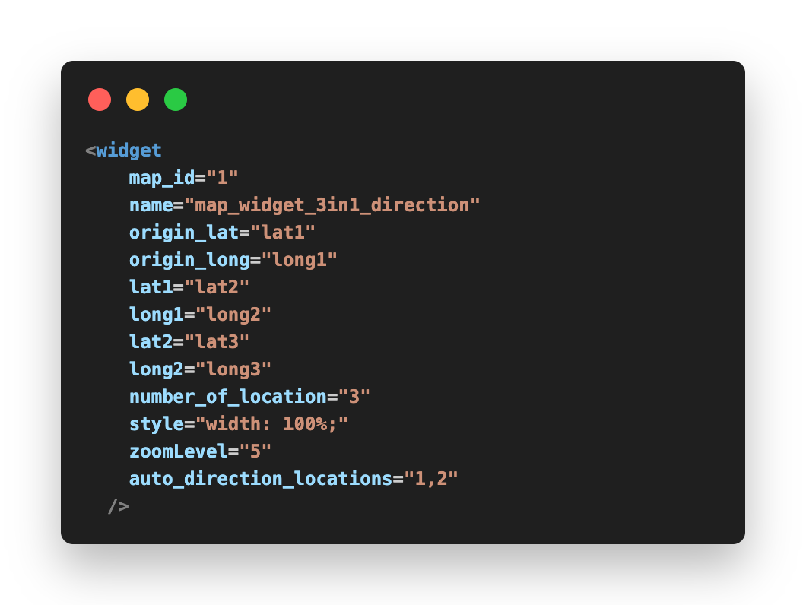
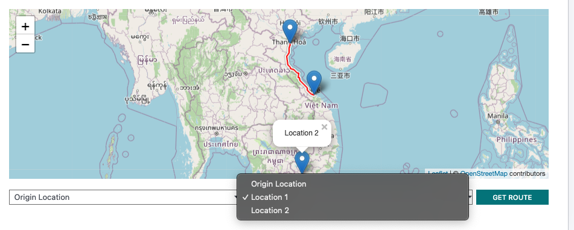
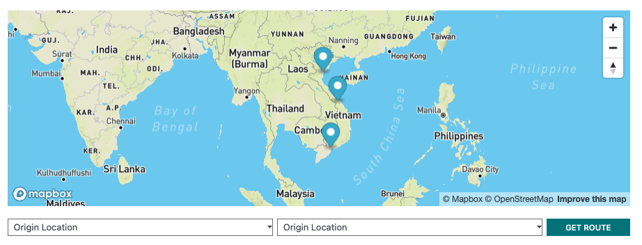
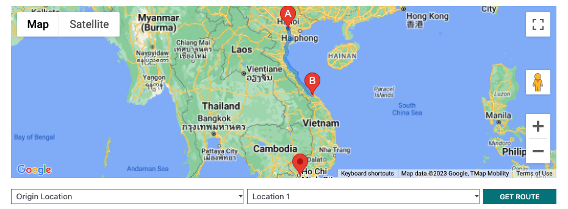

Demo


🗺️ Map Widget (3 in 1) Direction - Odoo V16
🚨Noticed: For using this direction feature, you need to integrate map_widget_3in1 addon first.
Demo
Installation

📌 Mapbox
a.1. If you want to display Mapbox, you need to register Map Box's API KEY
a.2. Enter the Mapbox API KEY into Setting. And if you enter the Mapbox's API KEY, the map widget will always choose Mapbox to display first.

📌 Open Street Map
b.1. If you want to display Street Map, just leave the Mapbox API KEY blank and tick into the Geo Localization option.
b.2. Make sure Geo Localization API's option is Open Street Map.

📌 Google Map
c.1. If you want to display Google Map, config following b.1 step.
c.2. Make sure Geo Localization API's option is Google Place Map, and do not forget adding Google API KEY


Usage Example
To add widget map direction, you need to have more than 2 of locations (read properties section - create dynamic location in map_widget_3in1)
We have 2 of ways to direction form first location to second location.




Properties
This map_widget_3in1_direction addons have common properties with map_widget_3in1, so you can read detail addons's properties here
| Function name | Description | Example value |
|---|---|---|
| auto_direction_locations | Static direction from location index A to location index B | (string) ex: "0,1", "0,2", "1,2"... |
Credits & Support